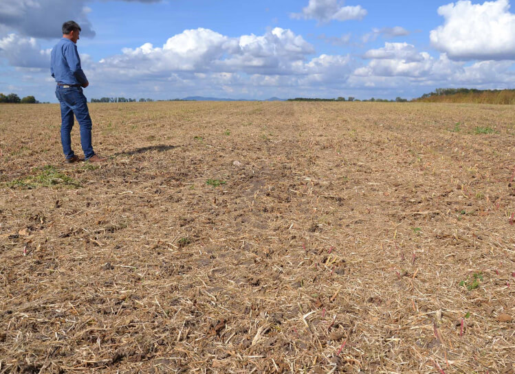
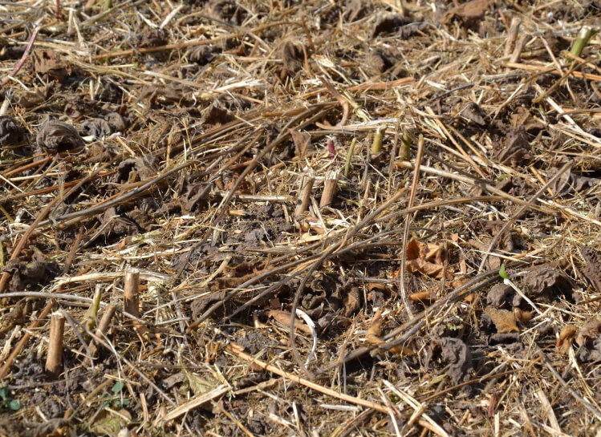
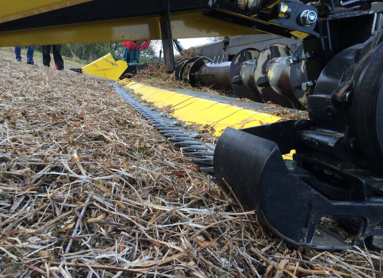

На фото поле после уборки урожая сои. С левой стороны это было сделано с помощью жатки Claas Lexion V750 с удлинителем BISO SojaFLEX, а справа - с «механическим» изгибом. Как вы видите, BISO SojaFLEX работает очень хорошо.
Цель состоит в том, чтобы разрезать соевое растение у самого основания соевых стручков.

Запрос клиентов - полностью «опуститься». Это значит, что нужно вплотную прикоснуться к земле. В этом случае вы, конечно, столкнётесь с тем что коса двойные пальцы будет быстро изнашиваться, однако ценность урожая при этом возрастает в разы.
Существует множество разных видов сои. На изображении вы можете увидеть очень высокую стерню после уборки сои, но в этом случае водителю не составило труда поднять соевый гибкий модуль (и немного жатку), потому что на земле не осталось стручков.
Покупатели говорят, что после сбора урожая со стандартным жаткой у них остается «два этажа» стручков на земле, из-за чего пропадают огромные деньги. Так что сбор урожая сои - нелегкая работа, и каждое отдельное поле, как правило, уникально.
Это БИО-соя с очень высоким сорняком. Собирать такое поле совсем не просто, но с ростом производства такой сои и эта проблема становится актуальной.
Расширение BISO SojaFLEX содержит модуль FLEX в «механическом» исполнении с приводом. Оно содержит в себе, нож редуктора, ремень и натяжитель, плюс приводной ремень, уникальный для каждой отдельной марки комбайна. Модуль FLEX закреплен на стандартной жатке и зафиксирован на месте длинными рычагами, которые располагаются прямо под жаткой и прикреплены болтами к заднему каркасу. В этой области маленькие «ушки» должны быть приварены к раме жатки. В этой области также есть возможность отрегулировать угол расширения SojaFlex, что очень важно для правильной работы всего комплекта.
Расширение SojaFlex от BISO может быть установлено на всех распространенных на рынке стандартных жатках и на одной жатке vario - Claas Vario. Для правильной подгонки и установки оборудования вы должны будете задействовать двух человек и один день времени.
Модуль FLEX имеет свои собственные полозья и является гибким благодаря ряду сегментных пружинных пластин. Удлинители SojaFlex оснащены двойными пальцами BISO, ножом BISO, головкой ножа, рычагом и коробкой передач. В качестве новой опции в 2020 году у нас будет специальная передвижная ножевая головка, и удлинение следует заказывать с двойными пальцами и ножом Шумахера. Данная покупка станет разумным решением для фермеров работающих в каменистых областях.
Длинные делители
Оба делителя являются частью комплекта с завода - левого и правого. Как показано на фотографиях, разделители полностью регулируются. Для сезона 2020 года система подвески была изменена, чтобы добиться лучшего и более свободного движения вверх. Типичными для сои являются длинные разделители, но некоторые водители имеют немного другую стратегию, и обычно она связана с типом сои, собираемой в регионе.
Левая сторона - это ключевая область с компонентами привода. В комплект входит ножевой редуктор с консолью и ножевая головка BISO. С 2020 года компания предлагает набор Schumacher: специальную головку ножа, нож Schumacher и двойные пальцы Schumacher.
Салазки под столом. Модуль FLEX скользит как раз по ряду таких полозьев. Фотография сделана с жаткой Laverda FreeFlow.
Левая сторона жатки: на этой фотографии вы можете очень хорошо увидеть ряд салазок модуля SojaFLEX, соединение с жаткой Laverda FreeFlow и областью ножа с типичным полностью регулируемым длинным делителем soya flex. Выставление правильного угла наклона является наиболее важной проблемой для модулей SojaFLEX.

Модуль SojaFLEX в действии. На этой фотографии вы можете увидеть, как гибкий модуль копирует землю. В этом случае угол двойного пальца не является агрессивным. В передней части мы видим защитный кожух рычага переключения передач.
Максимальная ширина 7,5 м
При работе в режиме FLEX нагрузка на трансмиссию жатки сильно повышается, но все зависит не только от полевых условий, но и от износа ножа и двойных пальцев. Благодаря большому опыту в этой области мы предлагаем расширение в 7,5 м в качестве максимальной ширины для всех брендов (7,6 м соответственно). Технология дает владельцу возможность срезать сою очень низко, так как пальцы прямо касаются поверхности почвы. Эффективность уборки урожая увеличивается в разы.
Комбинация Claas Lexion 760 с жаткой V750 vario с модулем BISO SojaFLEX в Словакии, 2019. Жатка vario от Claas - это только один тип колпака vario, в который можно установить модуль BISO SojaFLEX.
На этой фотографии вы можете увидеть, как легко водитель может регулировать высоту среза в зависимости от местных условий. В этом случае было легко собирать сою, которую культивировали механически на пропашных культиваторах без следов от опрыскивателей.
И снова Claas Vario V750 с модулем BISO SojaFLEX. На рисунке видно, что привод работает с барабаном, чтобы плавно подавать урожай в зону шнека. Комбайны Claas не имеют регулировки угла жатки, поэтому при монтаже удлинителя базовая установка должна выполняться правильно. У комбайна нет автоматической функции барабана. Водитель должен отрегулировать ограничитель намотки таким образом, чтобы он не касался ножевой зоны гибкого модуля стальными пружинными пальцами наматывания.
Посмотрите на правый разделитель на этом комбайне Lexion с модулем BISO SojaFLEX. Водитель использует только простую петлю из пружинной стали. Для некоторых видов сои это может быть хорошим решением, потому что у зеленых материалов нет места для упаковки и блокирования потока урожая.
Это уже становится обычной картиной в Словакии: соя BIO очень хорошо обрабатывается пропашными культиваторами с особым профилем почвы. На таком поле вы можете добиться очень хороших результатов уже с механическим модулем SojaFLEX. На стандартных полях самая большая проблема во время уборки сои у нас связана с гусеницами опрыскивателя.